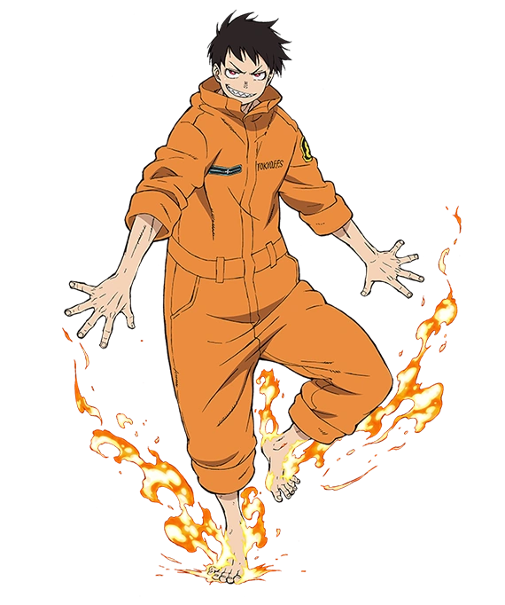

WEBP Images

This image is a WEBP from the anime fire force. It depicts a boy wearing an orange jump suit with fire coming out of his feet. He has black hair, red eyes, and sharp teeth. I chose this picture to showcase WEBP files as it has a range of colors and also contains a transparent background
link to image (Heros Wiki, Fandom)